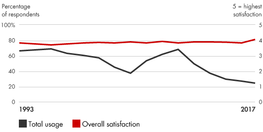
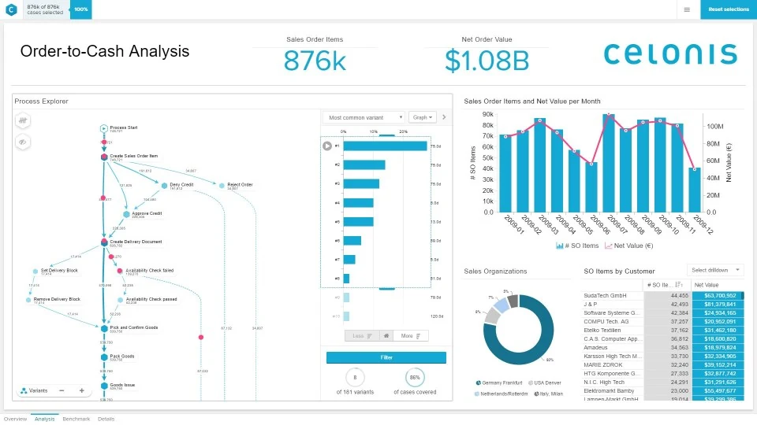

📘معرفی ابزار
مهندسی مجدد فرآیند کسبوکار، شامل طراحی مجدد فرآیندهای اصلی کسبوکار برای رسیدن به پیشرفتهای چشمگیر در تولید، زمانبندیها و کیفیت است. در مهندسی مجدد فرآیندهای کسبوکار، شرکتها با یک ورق کاغذ سفید شروع میکنند و در فرآیندهای موجود تجدید نظر میکنند به گونهای که ارزش بیشتری به مشتری ارایه دهند. آنها معمولا سیستم ارزشی جدیدی را اتخاذ میکنند که تاکید بیشتری بر نیازهای مشتری دارد. شرکتها لایههای سازمانی را کاهش داده و فعالیتهای غیرسازنده را در دو حوزه کلیدی حذف میکنند. اول اینکه، آنها سازمانهای با کارکرد محدود۱ را به صورت تیمهای عملیاتی چندوظیفهای۲ طراحی مجدد میکنند. دوم اینکه آنها از فنآوری برای بهبود انتشار دادهها و کمک به تصمیمگیری استفاده میکنند.
🆕بهروزرسانی ۱۴۰۵
این بخش در نسخهٔ آنلاین ۱۴۰۵ افزوده شده است. متن اصلی کتاب (آبان ۱۳۹۹) در بخشهای بعد بدون تغییر آمده است.
آمار و شواهد تازه
- بازار «کاوش فرآیند» (process mining) در ۲۰۲۵ طبق برآورد Everest Group حدود ۱٫۵ تا ۱٫۶ میلیارد دلار بوده و سالانه حدود ۲۴٪ رشد میکند. (منبع: IT Brief)
- Everest Group رشد سالانهٔ ۲۰ تا ۲۵٪ را برای سالهای پیشرو در این بازار انتظار دارد. (منبع: IT Brief)
چه چیزی تغییر کرده؟
طراحی مجدد فرآیند دیگر با «مصاحبه و نقشهکشی دستی» شروع نمیشود؛ ابزارهای کاوش فرآیند از لاگ سامانهها نقشهٔ واقعی فرآیند را استخراج میکنند و نقطهٔ شروع بحث میشوند. عاملهای هوش مصنوعی گامهای تکراری را خودکار میکنند، اما اصل کتاب (بازاندیشی از پایه و تعریف مالک فرآیند) بدون تغییر معتبر است.
نمونه ابزارها و نرمافزارهای امروزی
نامها صرفاً نمونهاند و توصیه یا تبلیغ تجاری نیستند؛ شرایط دسترسی و تحریمها را برای سازمان خود بررسی کنید.
منابع این بخش
🧩فرآیند اجرا
مهندسی مجدد فرآیند کسبوکار یک ابتکار برای ایجاد تغییرات چشمگیر است که شامل پنج مرحله مهم است که مدیران باید اتخاذ کنند:
- ارزیابی میزان تمرکز ارزشهای شرکت بر نیازهای مشتری
- طراحی مجدد فرآیندهای اصلی که اغلب با استفاده از فنآوری اطلاعات محقق میشود
- تبدیل کسبوکار به تیمهای عملیاتی چندوظیفهای با مسئولیت کامل۳ برای یک فرآیند
- تفکر مجدد درباره مسایل اساسی سازمانی و انسانی
- بهبود فرآیندهای کسبوکار در سراسر سازمان
💼موارد استفاده در کسبوکار
- کاهش هزینهها و زمان چرخهها: مهندسی مجدد فرآیندهای کسب و کار هزینهها و زمان چرخهها را با حذف فعالیتهای غیرسازنده و کارمندانی که آنها را اجرا میکنند، کاهش میدهد. سازماندهی مجدد توسط تیمها، نیاز به لایههای مدیریتی را کاهش داده، جریان اطلاعات را سرعت میبخشد و خطاها و دوبارهکاری ناشی از دستبهدست شدن متعدد و بروکراسی را حذف میکند.
- بهبود کیفیت: مهندسی مجدد فرآیندهای کسبوکار با کاهش شکافهای۴ کار و ایجاد مسئولیت شفاف در فرایندها، کیفیت را بهبود میبخشد. کارگران مسئولیت خروجی خود را به دست میآورند و میتوانند براساس بازخورد فوری عملکرد خود را اندازهگیری کنند.
📈میزان محبوبیت در طی زمان

🧪نمونه ابزار / الگو

در این تصویر یک روش قابل استفاده در طراحی مجدد فرآیندهای کسب و کار که بر اساس فرآیندکاوی میباشد نشان داده شده است. در این روش دادههای مختلف از سامانههای عملیاتی نظیر ارتباط با مشتریان و فروش جمع آوری میشود و میزان کارآیی هر جزء اندازه گیری میشود و گزارشهای حاصل از آن میتواند در شناسایی و رفع نواقص مورد استفاده قرار بگیرد.
⬇️چکلیست قابلدانلود
چکلیست اجرایی این ابزار را دانلود و در سازمان خود تکمیل کنید. گامها از فرآیند اجرای همین صفحه برداشته شدهاند و ستونهای مسئول، موعد و وضعیت برای پیگیری تیمی خالی گذاشته شده است.
⬇ دانلود چکلیست (Word) · مهندسی مجدد فرآیندهای کسبوکار📚مراجع مطالعه بیشتر
- Bain & Company, Business Process Reengineering: https://www.bain.com/ insights/management-tools-business-process-reengineering
- Nural Amal, Business Process Reengineering Template Templates: nurulamal.com/postimg/business-process-reengineering-template-templates-2
- Al-Mashari, Majed, Zahir Irani, and Mohamed Zairi. “Business Process Reengineering: A Survey of International Experience.” Business Process Management Journal, December 2001, pp. 437–455.
- Carr, David K., and Henry J. Johansson. Best Practices in Reengineering: What Works and What Doesn’t in the Reengineering Process. McGraw-Hill, 1995.
- Champy, James. Reengineering Management: The Mandate for New Leadership. HarperBusiness, 1995.
- Davenport, Thomas H. Process Innovation: Reengineering Work Through Information Technology. Harvard Business School Press, 1993.
- Frame, J. Davidson. The New Project Management: Tools for an Age of Rapid Change, Complexity, and Other Business Realities. Jossey-Bass, 2002.
معادلهای انگلیسی
- ۱Functional Organizations
- ۲Cross-functional team
- ۳end-to-end
- ۴Fragmentation